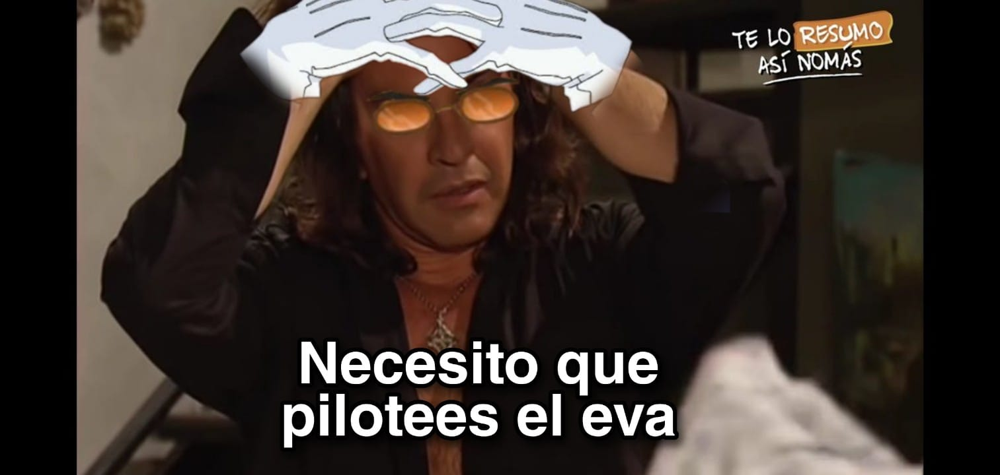

Centro Cultural Pochoclo Salado 📽️
📍 Ubicación: Parque Avellaneda-3
Próxima función:
Domingo 20: Evangelion! Terminamos la serie, capítulos 20-26. 🍅+Info | 100% en Rotten Tomatoes? Y SÍ.

Próximas Fechas Tentativas:
Domingo 27: The End of Evangelion. 🍅+ Info. El final de un ciclo, la serie llega a su conclusión. Shinji, subite al Eva.
Domingo 3 de Abril: 2001 Odisea en el Espacio. 🍅+ Info. Un clásico de la ciencia ficción que inspiró al género para siempre.
Domingo 10 de Abril: ?
Agregá tu película o comentario a la lista: Google Docs.